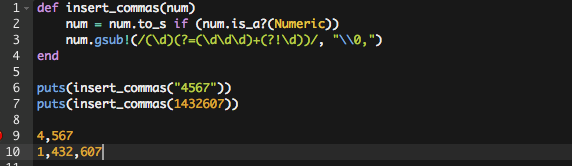
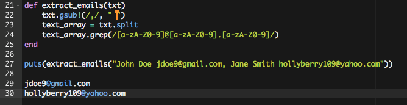

RegEx are "Regular Expressions", but they will hardly seem regular to anyone new to the concept. So, what are they? Regular expressions are specially formatted strings that describe a pattern, and you can use them to find matches within another body of text. That may not sound exciting to start with, but they are an extremely valuable tool once you learn how to read and write them.
First, let's tackle a common challenge that beginning programmers are asked to solve without using regex - the old "insert commas into this long number" problem. Now, without regular expressions we have to use good, plain old problem solving algorithms. That's why it is a common challenge given to beginners. But while that is good programming practice, it is not really the way you would want to solve the problem in 9 out of 10 cases. So what would work in Ruby using regex?
Let's explore what is happening line by line...
On line 1 we define our method, nothing special to see here. Line 2 simply makes our method more robust by allowing it to accept either a numeric value or a string value; in either case we ensure that what we are passing to the next line is in fact a string. Line 3 - Ah, here is where the work is done! We call #gsub! on our number as a string and pass it a regular expression as the first argument and what we would like to have substituted or inserted as the second argument. If you need a brush up on #gsub!, check it out here.
So where does the regular expression begin and end? Well, it everything between the two / forward slashes. In other words our regex here is /(\d)(?=(\d\d\d)+(?!\d))/.
It says, if we have a digit (\d) that is followed by three more digits (?=(\d\d\d) that is also NOT followed by a single digit (?!\d), then we have a match. And what do we do if we have a match? Well, "\\0," tells #gsub! to not add anything else, but to put in that comma that you see after the zero. It should be noted that this is not the only way to write a regex to find the matches and insert commas, but this one works.
Simple, right? If you're shaking your head "no", don't worry! Learning regular expressions is like learning a whole new language in some ways, but it will come to you pretty easily if you play around with it and see what happens. A great resource for playing around with this is Rubular.com. They also have a nice quick reference for typical kinds of regex, and you can play around with building your own.
But maybe you don't think that adding commas into numbers-as-strings is very exciting after all. What about being able to scrape through a document or even a webpage and extract all of the emails in that text? Let me show you a very basic way to do this:
This method takes a string, gets rid of commas (you might want to also get rid of some other punctuation, but this is just an example), splits the string into an array, and then, on line 24 uses #grep to search through the array to find matches. Matches of what exactly? [a-zA-Z0-9] is looking for any matches of upper and lower case letters or numbers. The "@" must be present exactly like that, in the middle. Then it wants another matches for all letters and numbers followed by a "." and then finally, any other combination of letters and numbers. You can see from the output (lines 28 and 29) that finds this pattern in the text passed to it and returns just the stuff that matches, which happens to be in the general form of an email address. Now, you could certainly make this a lot more fancy and explicit so as to avoid things that might look like email addresses, but are in fact not. In other words, this isn't a production code example, but it does show how regex can be used.